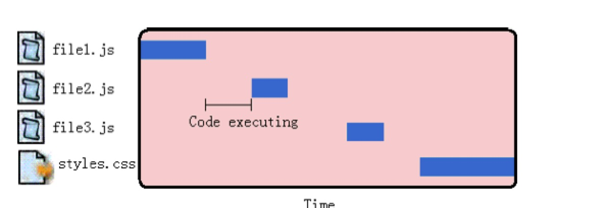

Javascript在浏览器中的性能，可以说是前端开发者所要面对的最重要的可用性问题。
在Yahoo的Yslow23条规则当中，其中一条是将JS放在底部 。原因是，事实上，大多数浏览器使用单进程处理UI和更新Javascript运行等多个任务，而同一时间只能有一个任务被执行。Javascript运行了多长时间，那么在浏览器空闲下来响应用户交互之前的等待时间就有多长。

从基本层面说,这意味着<script>标签的出现使整个页面因脚本解析、运行而出现等待。不论实际的 JavaScript 代码是内联的还是包含在一个不相干的外部文件中,页面下载和解析过程必须停下,等待脚本 完成这些处理,然后才能继续。这是页面生命周期必不可少的部分,因为脚本可能在运行过程中修改页面 内容。典型的例子是 document.write()函数,例如:
1 <html>
2 <head>
3 <title>Script Example</title>
4 </head>
5
6 <body>
7 <p>
8 <script type="text/javascript">
9 document.write("The date is " + (new Date()).toDateString());
10 </script>
11 </p>
12 </body>
13 </html>
当浏览器遇到一个<script>标签时,正如上面 HTML 页面中那样,无法预知 JavaScript 是否在<p>标签中 添加内容。因此,浏览器停下来,运行此 JavaScript 代码,然后再继续解析、翻译页面。同样的事情发生 在使用 src 属性加载 JavaScript 的过程中。浏览器必须首先下载外部文件的代码,这要占用一些时间,然后 解析并运行此代码。此过程中,页面解析和用户交互是被完全阻塞的。
因为脚本阻塞其他页面资源的下载过程,所以推荐的办法是:将所有<script>标签放在尽可能接近<body> 标签底部的位置,尽量减少对整个页面下载的影响。例如:
1 <html>
2 <head>
3 <title>Script Example</title>
4 <link rel="stylesheet" type="text/css" href="styles.css">
5 </head>
6
7 <body>
8 <p>Hello world!</p>
9 <-- Example of recommended script positioning -->
10 <script type="text/javascript" src="file1.js"></script>
11 <script type="text/javascript" src="file2.js"></script>
12 <script type="text/javascript" src="file3.js"></script>
13 </body>
14 </html>
此代码展示了所推荐的<script>标签在 HTML 文件中的位置。尽管脚本下载之间互相阻塞,但页面已经 下载完成并且显示在用户面前了,进入页面的速度不会显得太慢。这就是上面提到的将JS放到底部。
另外，Yahoo! 为他的“Yahoo! 用户接口(Yahoo! User Interface,YUI)”库创建一个“联合句柄”,这是通过他 们的“内容投递网络(Content Delivery Network,CDN)”实现的。任何一个网站可以使用一个“联合句柄”URL 指出包含 YUI 文件包中的哪些文件。例如,下面的 URL 包含两个文件:
1 <script type="text/javascript" src="http://yui.yahooapis.com/combo?2.7.0/build/yahoo/yahoo-min.js&2.7.0/build/event/event-min.js"></script>
此 URL 调用 2.7.0 版本的 yahoo-min.js 和 event-min.js 文件。这些文件在服务器上是两个分离的文件,但是 当服务器收到此 URL 请求时,两个文件将被合并在一起返回给客户端。通过这种方法,就不再需要两个 <script>标签(每个标签加载一个文件),一个<script>标签就可以加载他们。这是在HTML页面包含多个外部Javascript的最佳方法。
Noblocking Scripts 非阻塞脚本
上述是页面初始状态包含多个Javascript脚本加载的最佳方法。Javascript倾向于阻塞浏览器某些处理过程，如http请求和界面刷新，这是开发者面临的最显著性能问题。保持Javascript文件短小，并限制http请求的数量，只是创建反应迅速的网页应用第一步。
但诸如大型网页有大量的Js代码，保持源码短小并不总是一种最佳选择。So，非阻塞脚本应运而生，我们需要的是向页面中逐步添加javascript，某种程度上而言不会阻塞浏览器。
而非阻塞脚本的关键在于，等页面完成加载之后，再加载Javascript源码，这意味着在window的load事件发出之后开始下载代码。
相关解释：
window 的load事件只会在页面载入完毕后触发一次且仅一次。
window.onload=function(){}必须等待网页中所有的内容加载完毕后 ( 包括元素的所有关联文件，例如图片 ) 才能执行，即Javascript此时才可以访问页面中的任何元素。
如下述几种方法：
Deferred Scripts 延期脚本
Html4为<script>标签定义了一个扩展属性：defer。
这个defer属性指明元素中所包含的脚本不打算修改DOM，因此代码可以稍后执行。defer属性只被Internet Explorer 4+和Firefox 3.5+支持，它不是一个理想的跨浏览器解决方案。在其他浏览器上，defer属性将被忽略。所以，<script>标签会按照正常默认方式处理，即是会造成阻塞。如果得到各个主流浏览器的支持，这仍是一种有效的解决方式。
<script type="text/javascript" src="file1.js" defer></script>
一个带有defer属性的<script>标签可以放置在文档的任何位置，它会在被解析时启动下载，直到DOM加载完成（在onload事件句柄被调用之前）。当一个defer的Javascript文件被下载时，它不会阻塞浏览器的其他处理过程，所以这些文件可以与其他资源一起并行下载。
可以使用下述代码测试浏览器是否支持defer属性：
1 <html>
2 <head>
3 <title>Script Defer Example</title>
4 </head>
5
6 <body>
7 <script defer> alert("defer");</script>
8 <script> alert("script"); </script>
9 <script> window.onload = function(){ alert("load");}; </script>
10 </body>
11 </html>
如果浏览器不支持defer，那么弹出的对话框的顺序是“defer”，“script”，“load”。
如果浏览器支持defer，那么弹出的对话框的顺序是“script”，“load”，“defer”。
根据大家评论的反馈，HTML5新增了一个async属性。在上述的基础上，对比一下defer与async的异同：
相同之处：
- 加载文件时不阻塞页面渲染
- 使用这两个属性的脚本中不能调用document.write方法
- 有脚本的onload的事件回调
区别点：
- html的版本 html4.0中定义了defer；html5.0中定义了async
- 执行时刻
每一个async属性的脚本都在它下载结束之后立刻执行，同时会在window的load事件之前执行。所以就有可能出现脚本执行顺序被打乱的情况；每一个defer属性的脚本都是在页面解析完毕之后，按照原本的顺序执行，同时会在document的 DOMContentLoaded之前执行。
- 浏览器
| Feature | Chrome | Firefox (Gecko) | Internet Explorer | Opera | Safari |
|---|---|---|---|---|---|
| Basic support | 1.0 | 1.0 (1.7 or earlier) | (Supported) | (Supported) | (Supported) |
asyncattribute |
(Supported) | 3.6 (1.9.2) | 10 | – | (Supported) |
deferattribute |
(Supported) | 3.5 (1.9.1) | 4 | – | (Supported) |
Dynamic Script Elements 动态脚本元素
DOM允许我们使用Javascript动态创建HTML的几乎所有文档内容，一个新的<script>元素可以非常容易的通过标准DOM创建：
1 var script = document.createElement ("script");
2 script.type = "text/javascript";
3 script.src = "file1.js";
4 document.body.appendChild(script);
新的<script>元素加载file1.js源文件。此文件当元素添加到页面后立刻开始下载。此技术的重点在于：无论在何处启动下载，文件的下载和运行都不会阻塞其他页面处理过程。
当文件使用动态脚本节点下载时，返回的代码通常立即执行（除了Firefox和Opera，它们将等待此前的所有动态脚本节点执行完毕）。
大多数情况下，我们希望调用一个函数就可以实现Javascript文件的动态下载。下面的函数封装实现了标准实现和IE实现：
1 function loadScript(url, callback){
2 var script = document.createElement ("script") ;
3 script.type = "text/javascript";
4
5 if (script.readyState){ //IE
6 script.onreadystatechange = function(){
7 if (script.readyState == "loaded" || script.readyState == "complete"){
8 script.onreadystatechange = null;
9 callback();
10 }
11 };
12 }
13 else { //Others
14 script.onload = function(){ callback();
15 };
16 }
17 script.src = url;
18 document.getElementsByTagName("head")[0].appendChild(script);
19 }
20
21 loadScript("file1.js", function(){ //调用
22 alert("File is loaded!");
23 });
此函数接受两个参数：Javascript文件的Url和一个当Javascript接收完成时触发的回调函数。属性检查用于决定监视哪种事件。最后一步src属性，并将javascript文件添加到head。
动态脚本加载是非阻塞Javascript下载中最常用的模式，因为它可以跨浏览器，而且简单易用。
XMLHttpRequest Script Injection XHR脚本注入
另一个以非阻塞方式获得脚本的方法是使用XMLHttpRequest(XHR)对象将脚本注入到页面中。此技术首先创建一个XHR对象，然后下载Javascript文件，接着用一个动态<script>元素将Javascript代码注入页面。看demo：
1 var xhr = new XMLHttpRequest();
2 xhr.open("get", "file1.js", true);
3 xhr.onreadystatechange = function(){
4 if (xhr.readyState == 4){
5 if (xhr.status >= 200 && xhr.status < 300 || xhr.status == 304){ // 检查http状态码
6 var script = document.createElement("script");
7 script.type = "text/javascript";
8 script.text = xhr.responseText;
9 document.body.appendChild(script);
10 }
11 }
12 };
13 xhr.send(null);
此代码向服务器发送一个获取file1.js的文件get请求。onreadystatechange事件处理函数检查readyState是不是4，然后检查http状态码是不是有效（200表示确定客户端请求已成功，2xx表示有效回应，304表示一个缓存响应）。如果收到一个有效响应，那么就创建一个新的<script>元素，将它的文本属性设置为从服务器接收到的responseText字符串。这样做实际上会创建一个带有内联代码的<script>元素，一旦新的<script>元素被添加到文档，代码将被执行，并准备使用。
此方法的优点是兼容性佳，且你可以下载不立即执行的Javascript代码。由于代码返回在<script>标签之外，它下载后不会自动执行，这使得你可以推迟执行。
此方法的确定是受到浏览器同源限制，Javascript文件必须与页面放置在同一个域内，不能从CDN(内容分发网络Content Delivery Network)下载。正因为这个原因，大型网页通常不采用XHR脚本注入技术。
Recommended Noblocking Pattern 推荐的非阻塞模式
推荐的向页面加载大量Javascript的方法分为两个步骤：
- 第一步，包含动态加载Javascript所需的代码，然后加载页面初始化所需的除了Javascript之外的部分。这部分代码尽量小，可能只包含loadScript()函数，它的下载和运行非常迅速，不会对页面造成很大干扰。
- 第二步，当初始代码准备好之后，用它来加载其余的Javascript。
例如：
1 <script type="text/javascript" src="loader.js">
2 </script> <script type="text/javascript">
3 loadScript("the-rest.js", function(){
4 Application.init();
5 });
6
7 </script>
将此代码放置在body的关闭标签</body>之前。这样做的好处是，首先，这样确保Javascript运行不会影响其他页面的其他部分显示。其次，当第二部分Javascript文件完成下载，所有应用程序所必须的DOM已经创建完毕，并做好被访问的准备，避免使用额外的事件处理（如window.onload）来得知页面是否已经准备好了。
另一个选择是直接将loadScript()函数嵌入在页面中，这可以减少一个http请求的开销。例如：
1 <script type="text/javascript">
2 function loadScript(url, callback){
3 var script = document.createElement ("script");
4 script.type = "text/javascript";
5
6 if (script.readyState){ //IE script.onreadystatechange = function(){
7 if (script.readyState == "loaded" || script.readyState == "complete"){
8 script.onreadystatechange = null;
9 callback();
10 }
11 };
12 } else { //Others
13 script.onload = function(){
14 callback();
15 };
16 }
17 script.src = url;
18 document.getElementsByTagName("head")[0].appendChild(script);
19 }
20
21 loadScript("the-rest.js", function(){
22 Application.init();
23 });
24 </script>
一旦页面初始化代码下载完成，还可以使用loadScript()函数加载页面所需的额外功能函数。
介绍一个通用的工具，Yahoo! Search的Ryan Grove创建了LazyLoad库（参见：http://github.com/rgrove/lazyload/ ）。LazyLoad是一个强大的loadScript()函数。LazyLoad精缩之后只有大约1.5KB。用法举例如下：
1 <script type="text/javascript" src="lazyload-min.js"></script>
2 <script type="text/javascript">
3 LazyLoad.js("the-rest.js", function(){
4 Application.init();
5 });
6 </script>
Summary 总结
- 将所有<script>标签放置在页面底部，紧靠关闭标签</body>的上方。此方法可以保证页面在脚本运行之前完成解析。
- 将脚本成组打包。页面的<script>标签越少，页面的加载速度就越快，响应也更迅速。不论外部脚本文件还是内联代码都是如此。
- 有几种方法可以使用非阻塞方式下载Javascript：
- 为<script>标签添加defer属性
- 动态创建<script>元素，用它下载并执行代码
- 用XHR对象下载代码，并注入到页面
通过上述策略，可以极大提高那些使用Javascript代码的网页应用的实际性能。
参考书籍《高性能Javascript》。
高性能Javascript专题，第二篇：高性能Javascript--高效的数据访问。